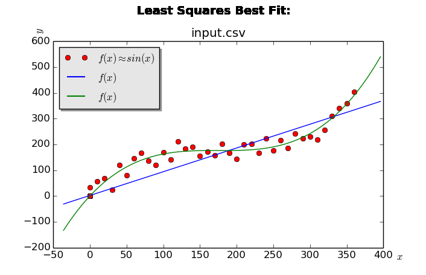

This repository features a C++ and Python implementation of the least squares curve fitting technique.
Assuming that you have the GCC Compiler g++ installed, take the
following steps to install the application:
git clone https://github.com/N02870941/least_squares_curve_fit.git
cd least_squares_curve_fit
./install.sh
Assuming that you are in the least_squares_curve_fit root directory:
./uninstall.sh
After installing the application, you may follow the following steps:
cd src/py
python3 main.py
The Graphical User Interface (GUI) is written in Python, using the Tkinter and Matplotlib libraries. I chose to write the UI in Python for simplicity and for the purpose of faster development. A sample photo of the general output of the program follows:

All of the functions that do the least squares calculations are written in C++, and are in the source code. This way, you can step through each phase of the process of the least squares algorithm. I am sure that there are libraries out there that can do this better, but I did it myself for fun and because it is a good exercise to know what is going on under the hood.